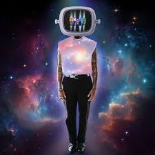
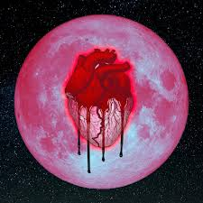
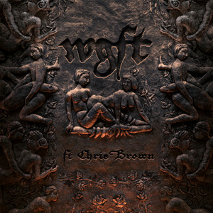
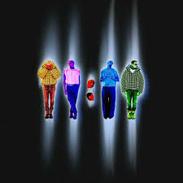
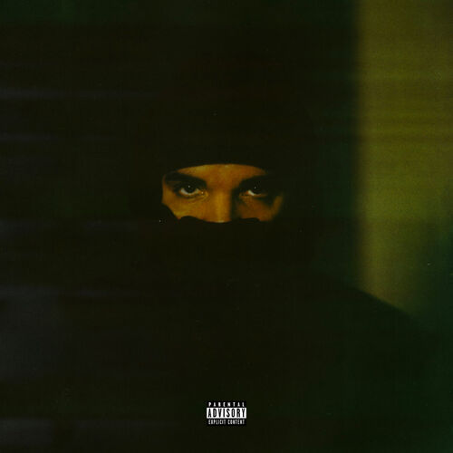
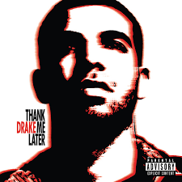
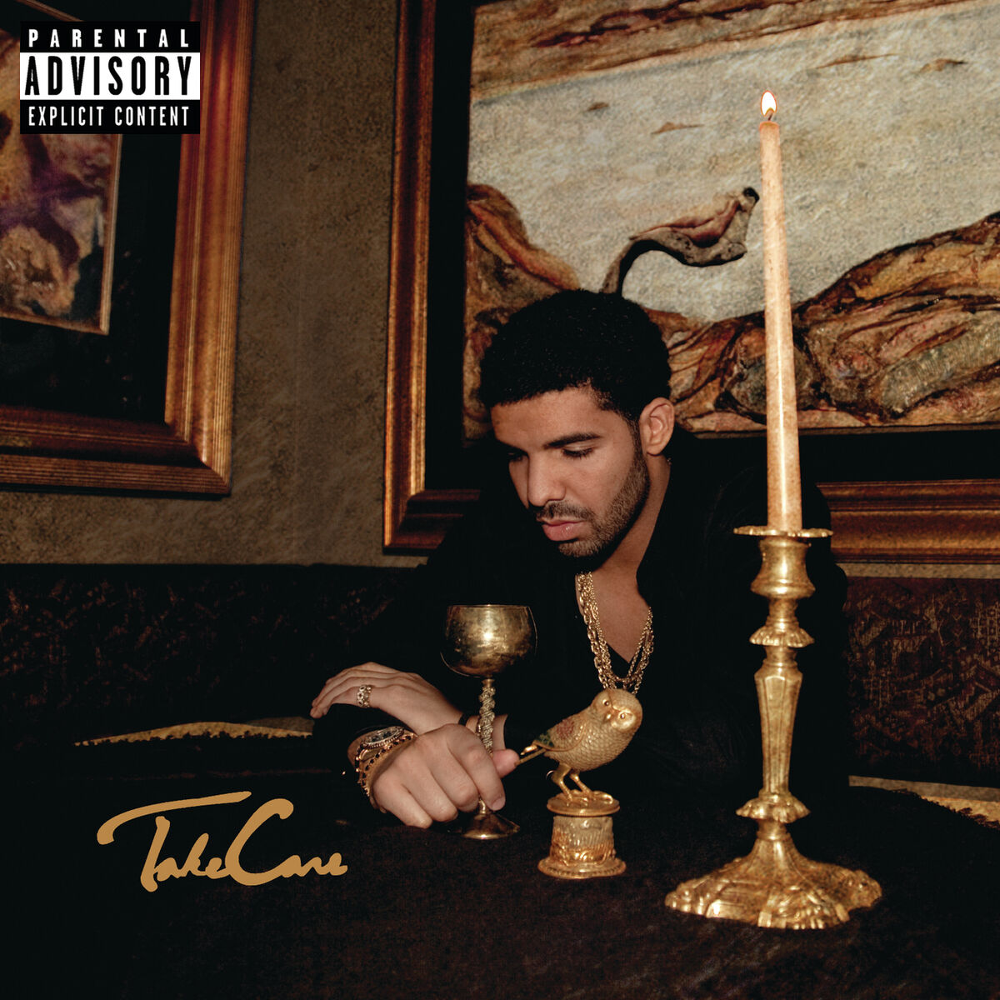

Residuals
11:11 | 2023 | R&BWhy I Love It: This track immerses you in a calming, ambient soundscape with soft percussion and Chris’s smooth vocals. Perfect for reflecting at the end of a long day.

Grass Ain't Greener
Heartbreak on a Full Moon | 2017Why I Love It: Dark and moody, this track captures the feelings of jealousy and reflection. The layered production makes it hypnotic.

WGFT (Remix)
R&B CollaborationWhy I Love It: A high-energy remix blending smooth harmonies and catchy rhythms. Perfect for both chill listening and hyped-up moments.
Go Crazy
Slime & B | 2020Why I Love It: This track radiates joy and energy. Its upbeat rhythm and vibrant instrumentation make it impossible not to move to.

Angel Numbers
11:11 | 2023Why I Love It: Evocative and dreamy, this track feels like a journey. The intricate melodies create a full emotional experience.

Time Flies
Dark Lane Demo Tapes | 2020Why I Love It: Smooth, minimalist production paired with reflective lyrics make this track perfect for introspection.

Passionfruit
More Life | 2017Why I Love It: This track exudes a tropical, laid-back feel. Its melodic structure and smooth vocals make it ideal for relaxing.

Unforgettable
Thank Me Later | 2018Why I Love It: A nostalgic, rhythmic track that balances rap and melody. It is both memorable and emotionally resonant.

Headlines
Take Care | 2011Why I Love It: Confident and self-reflective. The track is an anthem of personal growth and resilience.
Best I Ever Had
Thank Me Later | 2018Why I Love It: Combines romantic storytelling with a smooth, catchy melody. A classic reflection on connection.